charles使用大全
我们在开发网站项目的时候，我们可以通过浏览器的debug模式来看request以及response的数据，那么如果我们开发移动端项目没有网页呢？如何抓取数据呢？
前几天有个做服务端的师弟跟我说他不用抓包工具，遇到问题直接debug代码，那我问他，如果线上服务的话，你怎么调？在实际项目中，没有遇到跟客户端相互扯皮的事情吗？我觉得很正常啊，客户端说他没问题，服务端也说他没问题，到底谁有问题？这时候没必要相互推脱，拿数据出来说话才是王道。抓包工具做了什么？它把客户端的请求数据，以及服务端返回的数据完完整整的抓取下来，供攻城狮分析问题。所以首先分析问题才是最重要的，而不是一上来就跟踪代码debug。
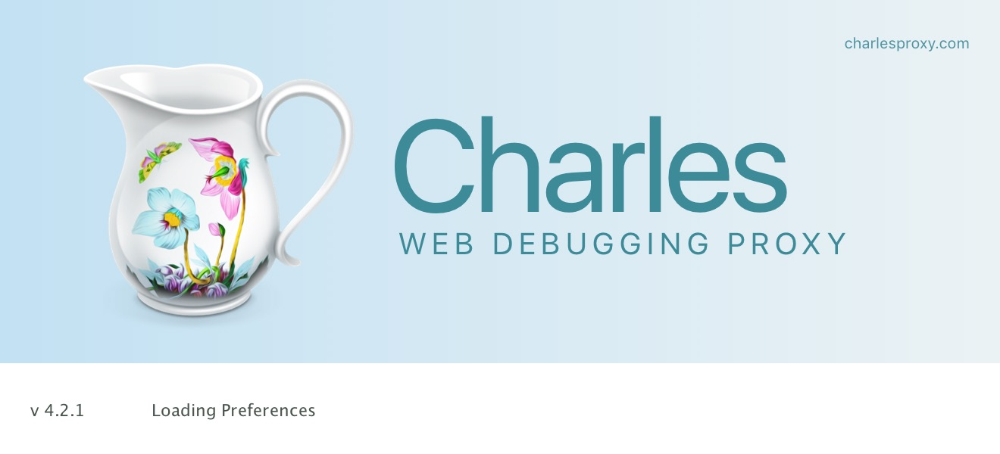
Charles
是一个HTTP代理服务器,HTTP监视器,反转代理服务器，当程序连接Charles的代理访问互联网时，Charles可以监控这个程序发送和接收的所有数据。它允许一个开发者查看所有连接互联网的HTTP通信，这些包括request,
response和HTTP headers （包含cookies与caching信息）。
Charles主要功能:
支持SSL代理。可以截取分析SSL的请求。
支持流量控制。可以模拟慢速网络以及等待时间（latency）较长的请求。
支持AJAX调试。可以自动将json或xml数据格式化，方便查看。
支持AMF调试。可以将Flash Remoting 或 Flex Remoting信息格式化，方便查看。
支持重发网络请求，方便后端调试。
支持修改网络请求参数。
支持网络请求的截获并动态修改。
检查HTML，CSS和RSS内容是否符合W3C标准。
Charles安装：
去Charles的官方网站（http://www.charlesproxy.com）下载最新版的相应操作系统的Charles安装包安装即可。
Charles是收费软件，可以免费试用30天。试用期过后，未付费的用户仍然可以继续使用，但是每次使用时间不能超过30分钟，并且启动时将会有10秒种的延时。
因此，该付费方案对广大用户还是相当友好的，即使你长期不付费，也能使用完整的软件功能。只是当你需要长时间进行封包调试时，会因为Charles强制关闭而遇到影响。（偷偷告诉你，公众号回复“Charles”获取破解版下载链接）
Charles的功能很强大，我们这里只介绍几个常用的并且非常实用的功能：
- 将Charles设置成系统代理
- 截取移动设备上的网络请求包
2.1手动重复请求（Repeat，Advanced Repeat）
2.2手动模拟请求（Compose）
2.3修改网络请求内容（Compose） - 过滤网络请求
- 代理转发
- 支持https请求抓包（如果配置了还是抓不到，下面有解决方案）
- 截取移动设备上的网络请求包
Charles 主要提供两种查看封包的视图，分别名为 “Structure” 和 “Sequence”。
Structure 视图将网络请求按访问的域名分类。
Sequence 视图将网络请求按访问的时间排序。
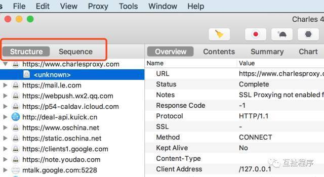
下面将一一介绍这些如何配置和使用
一. 将Charles设置成系统代理
Charles 是通过将自己设置成代理服务器来完成抓包的，勾选系统代理后，系统本地发出去的请求都能被截取下来。如果只抓取APP的包的话，可关闭此配置，这样不会出现太多的数据看着比较乱。
Mac
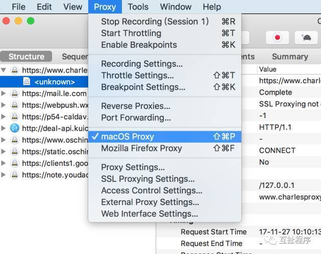
Windows:
需要注意的是，Chrome 和 Firefox 浏览器默认并不使用系统的代理服务器设置，而 Charles
是通过将自己设置成代理服务器来完成封包截取的，所以在默认情况下无法截取 Chrome 和 Firefox
浏览器的网络通讯内容。如果你需要截取的话，在 Chrome 中设置成使用系统的代理服务器设置即可，或者直接将代理服务器设置成
127.0.0.1:8888 也可达到相同效果。
二. 截取移动设备上的网络请求包
我们在调试移动APP时，需要抓取APP发送的数据包，首先进行设置，Proxy -> Proxy Settings默认端口是8888，根据实际情况可修改。
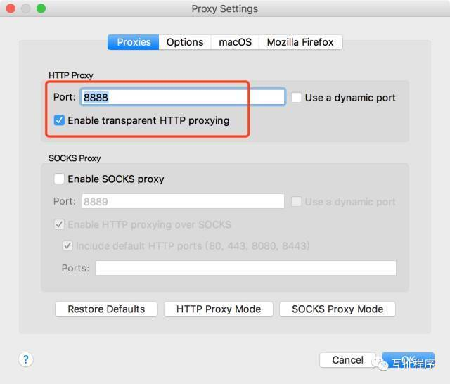
查看本机IP地址：Help -> Local IP Addresses
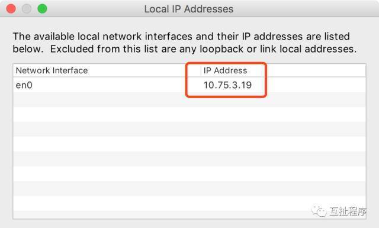
然后配置手机代理：
IOS和Android配置差不多
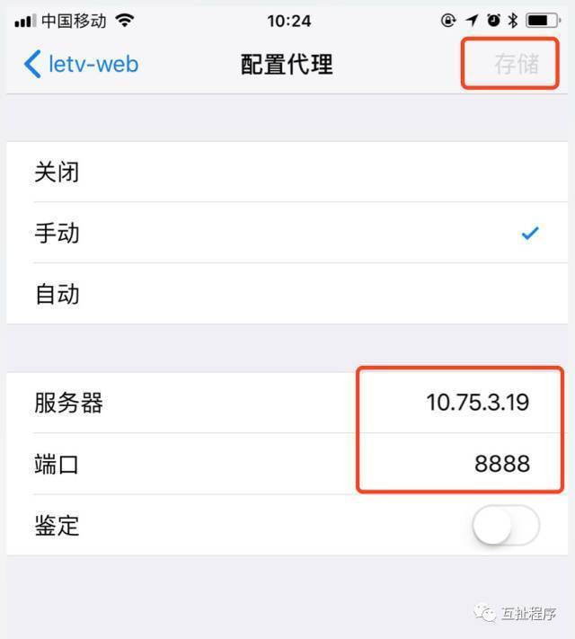
打开要调试的APP，请求就会先发送到Charles，然后验证是否允许访问。
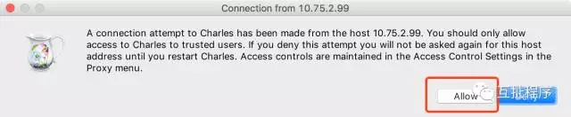
当点击允许后，可以在Proxy -> Access Control Settings里看到可以访问此代理服务器列表
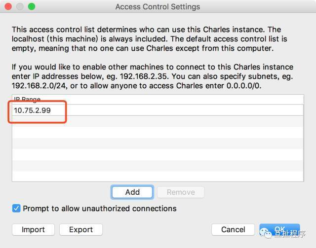
注意
如果不小心点击了拒绝，可以手动添加手机IP/Mac地址到允许访问列表，或者重启Charles，手机再次访问，会再次提示选择。
如果不想每换一个手机都要进行验证，可以配置允许所有手机访问，加入
0.0.0.0/0（IPv4）或::/0（IPv6）
现在就可以抓包了，拿一款我们公司开发的乐视车联APP来做测试：
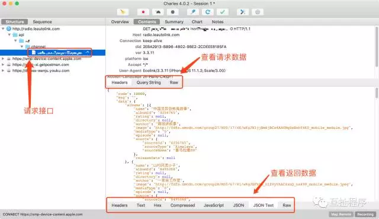
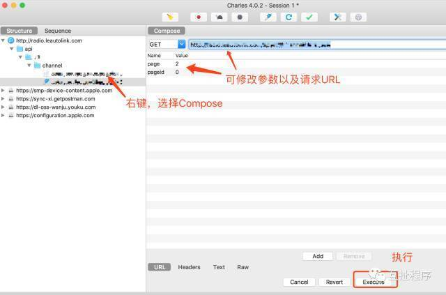
三. 过滤网络请求
通常情况下，网络请求是非常大量的，从几十个请求里找到我们需要的观察的某个请求比较费时，那么我们就需要对网络请求进行过滤，只监控向指定目录服务器上发送的请求。有两种方法：
在Sequence界面的中部的Filter栏中填入需要过滤出来的关键字。例如我们的服务器的地址是：*.leautolink.com，那么只需要在Filter栏中填入leautolink即可。（一般用于临时过滤）
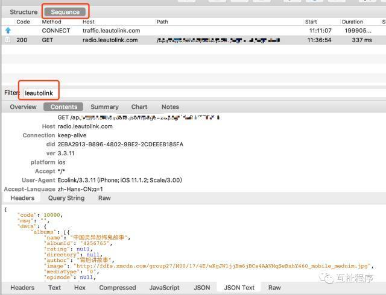在Charles的菜单栏选择”Proxy”->”Recording Settings”，然后选择Include栏，选择添加一个项目，然后填入需要监控的协议，主机地址，端口号。这样就可以只截取目标网站的封包了。如下图所示：（固定过滤地址）
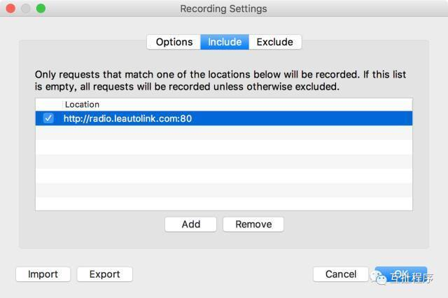
四. 代理转发
实际开发时，有这样的场景，服务端线上版本有bug，你在本地修改程序后，需要模拟实际的线上环境，来验证程序的正确性，最笨的方法就是让客户端修改一下APP的调用地址到你本机，然后重新打一个版本供你模拟测试，这样虽然可以，但每次遇到bug都要这么做的话，那效率极其低下，然而Charles为我们解决了这个问题。
请求转发，把调用方调用的地址转发到你本机地址的程序进行执行。
右键 -> Map Remote …
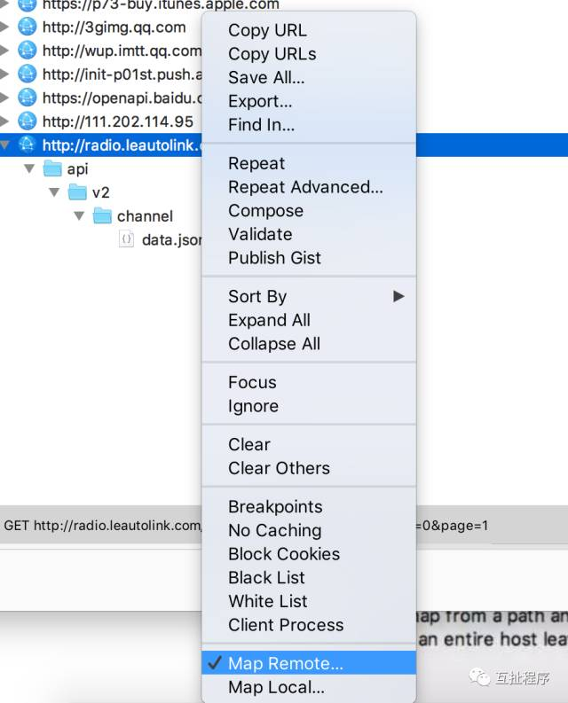
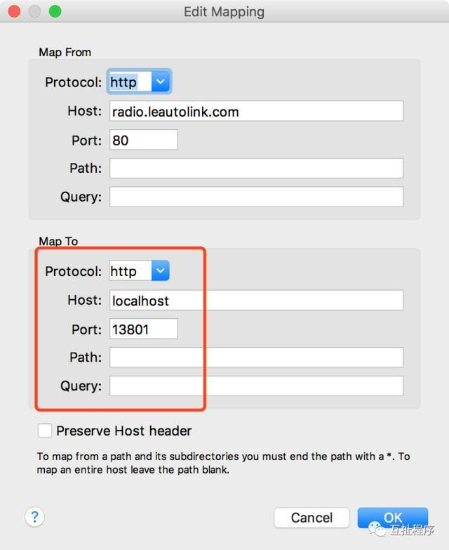
并且配置Tools -> Map Romote
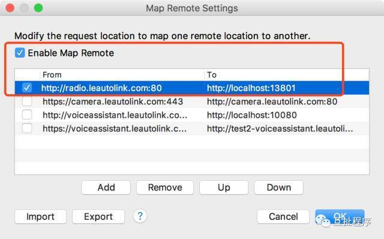
运行APP
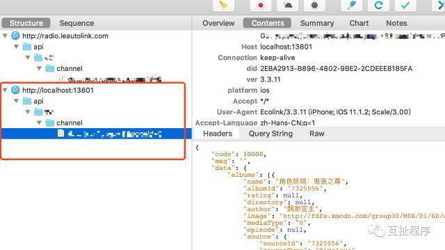
五. Https请求抓包
默认我们是看不到https的请求数据的。我们需要安装证书。
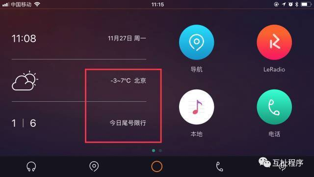
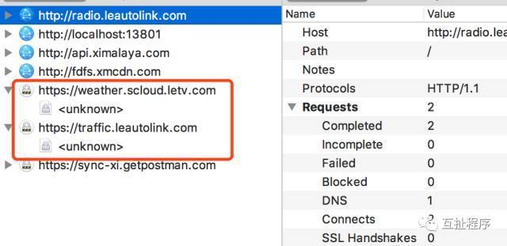
Mac:
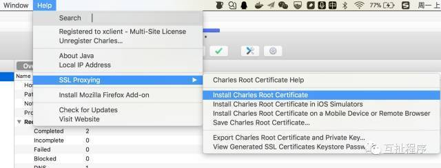
双击打开Charles Proxy CA
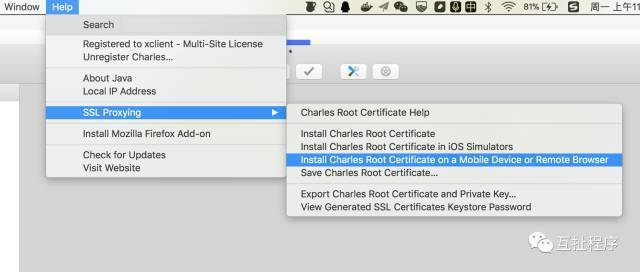
手机配置完代理（必须的操作）后，浏览器打开http://chls.pro/ssl
然后配置Proxy -> SSL Proxying Settings… 添加要抓取的https请求
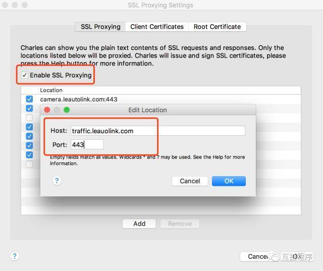
然后再次请求：
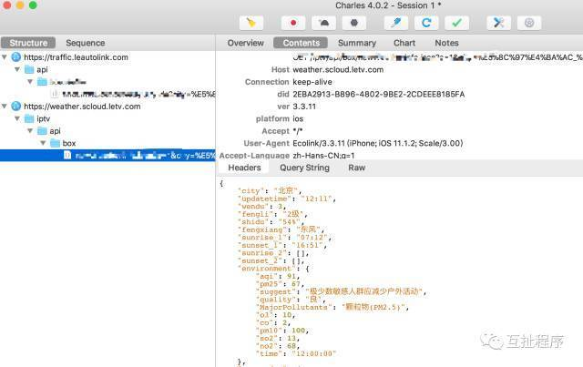
如果不再使用Charles，想删除手机里的证书文件怎么删除呢？
设置->通用->描述文件与设备管理，删除指定的证书即可
Windows:
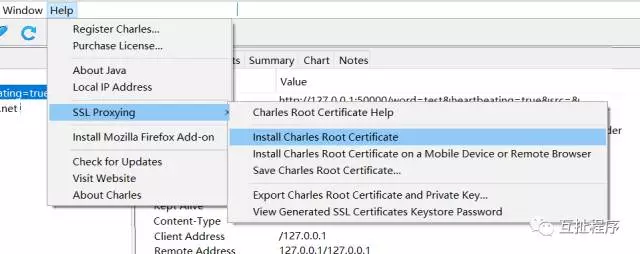
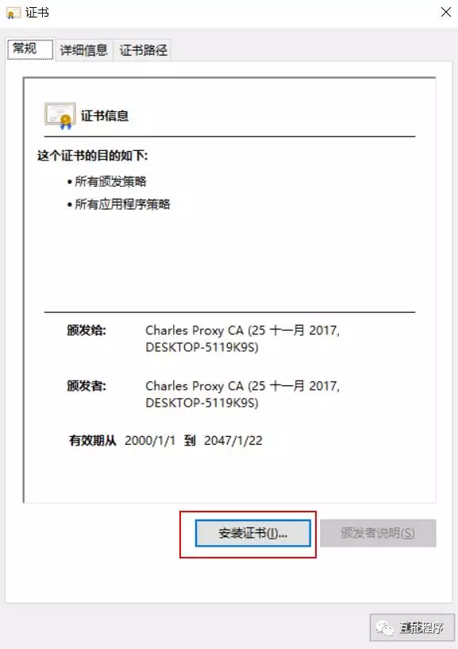
下一步
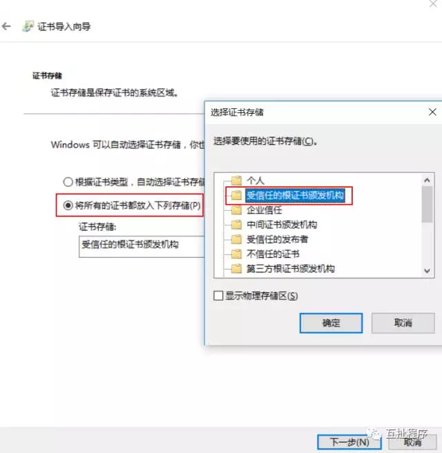
然后继续下一步直到导入成功。
剩下的配置与Max下配置相同
SSL的问题：
最近iPhone系统更新到ios
10.3后,用Charles抓包竟然出现了一些问题,https的请求都会失败,提示错误信息为Failure SSLHandshake:
Received fatal alert: unknown_ca 和You may need to configure your browser
or application to trust the Charles Root Certificate.
然而之前任何问题都没有,并且相关设置都正确:电脑上安装了Charles的根证书,并且设置了始终信任,然后手机上也登录了http://chls.pro/ssl安装了描述文件,一切都按正常程序走的,但是错误始终无法解决.
原因：
虽然charles的根证书已经在安装列表中显示,但它是被关闭的。在iOS
10.3之前,当你将安装一个自定义证书,iOS会默认信任,不需要进一步的设置。而iOS
10.3之后,安装新的自定义证书默认是不受信任的。如果要信任已安装的自定义证书,需要手动打开开关以信任证书。
解决：
设置->通用->关于本机->证书信任设置-> 找到charles proxy custom root certificate然后信任该证书即可.
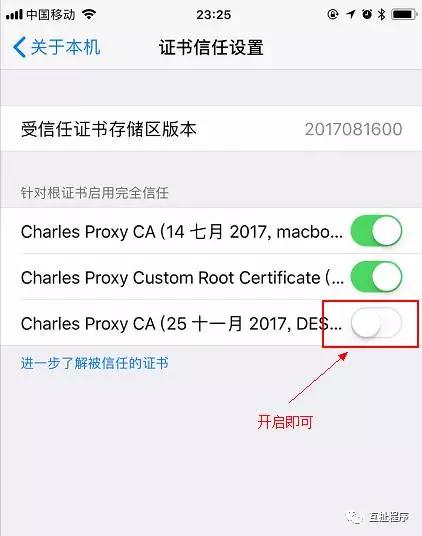
Windows系统无法上网的问题
在windows下，如果Charles没有正常关闭，或者系统重启后无法上网的问题，因为Charles做了系统代理，当上网的时候，首先先访问代理服务器，然后代理再去链接网络，这时候Charles是非正常关闭的，只要重新打开Charles即可上网正常，正常关闭Charles后同样没问题。
写给测试人员的
另外抓包工具不只是开发人员独享的，任何一个参与项目的人都可以使用，测试工程师，运维，产品经理等等任何对技术感兴趣的人，尤其是测试工程师，在测试的过程中遇到问题，不是简单的bug记录员，而要做到问题的分析员，这才是真正的“工程师”，当bug真正的到开发这的时候，他拿到的是不仅仅是bug，包含了分析过程，分析的数据，甚至是解决方案。我觉得这才是标准工作方式。
举个例子，现在是移动互联网时代，那么我们开发的客户端必然包括Android和IOS版本，同样的功能必然在不同的客户端都有实现，比如同样的功能Android能用，而IOS不能用，这时候对于测试人员来说，他可以简单的提个bug说某个功能Android能用，ISO不能用，请开发人员解决。这个问题应该给谁呢？IOS开发，是IOS缺少请求参数？服务端开发，是服务端缺少对IOS的兼容吗？为了能让问题解决，可能要写两个相同的bug发给不同的人，
那我们开发看到这样的问题，首先重现问题，那么肯定要跟测试人再次沟通，问问当时的测试过程，然后模拟同样的数据进行复现。
那么如果我们的测试工程师换一种工作方式呢？当遇到问题的时候，用抓包工具把数据抓下来，首先比较Android和IOS发送请求参数有什么不同，比较一下返回的数据有什么不同，如果请求参数不同，那么测试人员通过模拟工具，把缺少的参数加上，那么返回的数据是不是就正确了呢？如果参数相同，返回的数据不同，或者是参数相同，返回的数据相同，这样的话，问题就显而易见了，测试人员可以把抓取的数据提交给相应的开发人员，而开发人员完全可以去debug了。提高测试人员的自身技能，而又提高了解决问题的效率，何乐而不为？